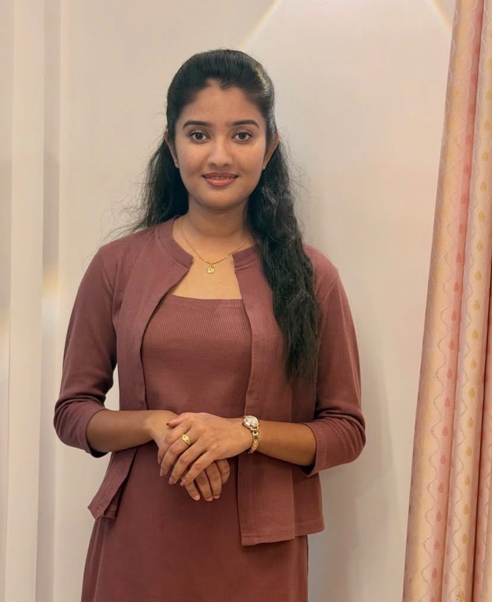

Kaluarachchi S.M.
IT22112446
Explainable AI-Based Interview Readiness Analysis and Career Path Recommendation
Undergraduate researchers and academic supervisors behind the Multi-Causal AI Career Framework.
Student Researchers
Four undergraduate researchers, each leading one specialized component of the multi-causal framework.

IT22112446
Explainable AI-Based Interview Readiness Analysis and Career Path Recommendation
IT22176110
Behavior-Aware Career Impact Prediction System
IT22201614
Career Safety and Industry Stability Analysis
IT22546470
AI-Assisted Employer Trust and Hiring Risk Assessment System
Academic Guidance
Academic oversight, research methodology guidance, and domain evaluation provided by faculty members of the Department of Information Technology, SLIIT.
Dept. of Information Technology
Faculty of Computing, SLIIT
Malabe, Sri Lanka
Dept. of Information Technology
Faculty of Computing, SLIIT
Malabe, Sri Lanka
Framework
How each component synthesizes data streams, machine learning inference, and explainability into the centralized framework.